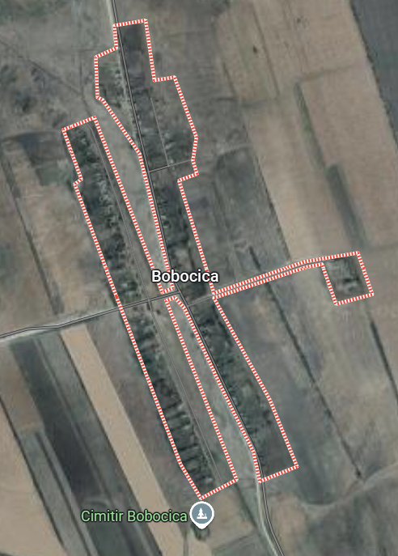

Comuna Enichioi
Date generale
Satul Enichioi

Satul Enichioi a fost atestat pentru prima dată în anul 1770. Este una din localitățile cu populație românească, fondate pe locul câșlelor tătărești. De aici și denumirea turcică Enichioi. Satul Enichioi e situat pe Valea Enichioiului, la 37 km sud-est de orașul Cantemir şi la 162 km de Chişinău. Se învecinează cu localităţile Baimaclia, Tartaul, Crăciun, Acui, Cîrpeşti, Şamalia. Comuna are în componența sa localitățile Boboica, Floricica și Țolica. Populația localității Enichioi este de 2018 locuitori, dintre care 982 bărbați și 1036 femei. Populaţia prezentă este de 1750, iar 268 de locuitori sunt plecaţi peste hotare. Suprafața teritoriului este de 34,8 km2. Pe teritoriul localității sunt amplasate mai multe instituții publice: gimnaziu, punct medical, casă de cultură, oficiu poștal, biserica „Sfântul Ierarh Nicolae”.
Satul Țolica
Țolica este un sat din cadrul comunei Enichioi, raionul Cantemir. Satul are o suprafaţă de circa 0.63 kilometri pătraţi, cu un perimetru de 3.85 km. Localitatea se află la distanța de 41 km de orașul Cantemir și la 127 km de Chișinău. Satul Țolica a fost înființat în anul 1907. Satul Țolica se mărginește cu următoarele localități : 3 km - distanța directă pînă la Satul Bobocica din Raionul Cantemir 6 km - distanța directă pînă la Satul Enichioi din Raionul Cantemir 3 km - distanța directă pînă la Satul Dimitrova din Raionul Cantemir 4 km - distanța directă pînă la Satul Acui din Raionul Cantemir 4 km - distanța directă pînă la Satul Taraclia din Raionul Cantemir Populația majoritară o reprezintă moldovenii. Satul Țolica a fost înființat în anul 1907. În perioada sovietică aici s-a aflat o brigadă a gospodăriei colective cu sediul în satul Baimaclia. În sat a fost deschisă o școală de 8 ani, club cu instalație cinematografică, bibliotecă, oficiu poștal, grădiniță, magazin.
Satul Bobocica
Bobocica este un sat din cadrul comunei Enichioi, raionul Cantemir. Satul are o suprafaţă de circa 0.68 kilometri pătraţi, cu un perimetru de 3.89 km. Localitatea se află la distanța de 41 km de orașul Cantemir și la 127 km de Chișinău. Satul Bobocica se mărginește cu următoarele localități: 4 km - distanța directă pînă la Satul Enichioi din Raionul Cantemir 7 km - distanța directă pînă la Satul Sadîc din Raionul Cantemir 7 km - distanța directă pînă la Satul Şamalia din Raionul Cantemir Populația majoritară o reprezintă moldovenii. . Satul Bobocica a fost înființat în anul 1918. Inițial localitatea s-a numit Bobocel, după numele inginerului cadastral Vestuță Boboc, care a măsurat terenurile, atunci cînd țăranii au fost împropietăriți cu pământ. În 1922 satul număra 190 de locuitori. În perioada sovietică aici s-a aflat o brigadă a gospodăriei colective „K.Marx" cu sediul în s. Enichioi. În sat a fost deschisă o școală primară, bibliotecă, grădiniță, magazin.
Info
Localitatea Enichioi se află într-o regiune deluroasă, caracterizată prin peisaje pitorești și o atmosferă liniștită, specifică mediului rural. Casele sunt dispuse pe o suprafață întinsă, majoritatea fiind construite într-un stil tradițional, cu acoperișuri de culori variate, ceea ce adaugă un farmec aparte întregului ansamblu. Printre locuințe se remarcă o școală, o biserică sau alte instituții publice, care deservesc comunitatea locală. Zona este înconjurată de terenuri agricole fertile, livezi și pășuni, ceea ce indică o activitate economică axată pe agricultură și creșterea animalelor. Atmosfera generală sugerează un loc liniștit, potrivit pentru traiul simplu și legătura directă cu natura.
Instituții publice
Primăria

Primăria asigură administrarea localității, implementând legi, hotărâri și proiecte locale. De asemenea, gestionează serviciile publice, bugetul local și relația cu cetățenii...
Află mai mult...
Gimnaziul
Gimnaziul asigură educația generală de bază pentru elevi, dezvoltând cunoștințele și competențele fundamentale. Totodată, pregătește elevii pentru continuarea studiilor în ciclurile superioare...
Află mai mult...
Grădiniță
Grădinița asigură educația timpurie, sprijinind dezvoltarea intelectuală, emoțională și socială a copiilor. De asemenea, pregătește copiii pentru integrarea în învățământul primar...
Află mai mult...
Biblioteca
Biblioteca este un loc al cunoașterii, unde oamenii pot descoperi cărți, informații și culturi diverse. Prin colecțiile sale, ea păstrează și transmite generațiilor viitoare patrimoniul cultural și științific...
Află mai mult...
Adrese utile
Primăria Enichioi
 Adresa:Raionul Cantemir,satul Enichioi
Adresa:Raionul Cantemir,satul Enichioi
Punctul medical Enichioi
 Adresa:Raionul Cantemir,satul Enichioi
Adresa:Raionul Cantemir,satul Enichioi
Punctul medical Țolica
 Adresa:Raionul Cantemir,satul Țolica
Adresa:Raionul Cantemir,satul Țolica